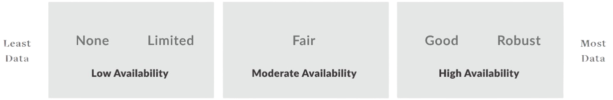

Search by Image

Drag an image here or
Understanding Skin Deep® ratings
Every product and ingredient in Skin Deep® gets a two-part score – one for hazard and one for data availability.
Hazard Score

The Skin Deep ingredient hazard score, from 1 to 10, reflects known and suspected hazards linked to the ingredients.
A product’s hazard score is not an average of the ingredients’ hazard scores. It is calculated using a weight-of-evidence approach that factors in all of the hazards or health impacts associated with the ingredients. To see details of how our hazard scores are calculated, see the “Hazard Ratings” section of our methodology.
Data Availability
The Skin Deep data availability rating reflects the number of scientific studies about the product or ingredient in the published scientific literature. Not all ingredients are equal when it comes to safety data. Some have been studied extensively. For others there is only a modest volume of research, and still others have not been assessed at all. The data availability rating indicates the scope of data on which EWG has based an ingredient and/or product score.
To calculate a product score, we review individual ingredient hazards and evaluate each product in relation to the rest of the products in the Skin Deep database. The safest products score well by both measures, with a low hazard rating and a fair or better data availability rating.